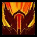

Qui sommes-nous?
En bref
Les "Stones", créés par un groupe d'amis ayant évolué dans des guildes HL sur Khaz Modan et Dalaran et ayant l'expérience nécessaire pour clean le contenu PVE de Classic, souhaitent rallumer la chaudière et retrouver leur premier amour, toujours côté Horde. Etant tous majeurs en 2005, la moyenne d'âge actuelle est de 35ans.
Nos objectifs
Nos objectifs sont assez simples. Nous voulons clean ensemble le contenu intégral que nous offre WoW Classic avec un temps de jeu réduit. Ayant tous des obligations qui réduisent notre temps de jeu, nous souhaitons rassembler le maximum de personnes pour clean les raids avant chaque reset en 2 soirs par semaine (jours pas encore déterminés). Connaissant parfaitement ce contenu, l'avancée sera de qualité.
L'ambiance que nous recherchons est celle de la belle époque. Nous avancerons ensemble dans un esprit relax sur les long moments sur les trash... et respecterons ce qui a fait la force de ce jeu.
Recrutement
Profil recherché
Nous cherchons des personnes ayant le même état d'esprit que le nôtre : si vous souhaitez découvrir le jeu ou le re-découvrir, partager ensemble de véritables moments communautaires et clean le contenu HL, vous êtes au bon endroit!
Classes recherchées
Nous recrutons actuellement toute classe sauf Guerrier Protection.
Nous recherchons activement des soigneurs (toutes classes).
Equilibre : ouvert
Farouche : ouvert
Guardien : ouvert
Restauration : ouvert
Maîtrise des bêtes : ouvert
 Précision : ouvert
Précision : ouvert
Survie : ouvert
Arcane : ouvert
Feu : ouvert
Givre : ouvert
Discipline : ouvert
Sacré : ouvert
Ombre : ouvert
Assassinat : ouvert
Combat : ouvert
 Finesse : ouvert
Finesse : ouvert
Elémentaire : ouvert
 Amélioration : ouvert
Amélioration : ouvert
Restauration : ouvert
 Affliction : ouvert
Affliction : ouvert
Démonologie : ouvert
Destruction : ouvert
 Armes : ouvert
Armes : ouvert
 Fureur : ouvert
Protection : fermé
Contact
Vous souhaitez discuter avec nous de la guilde? Rejoignez-nous sur Discord !Vous préférez nous parler directement en jeu? N'hésitez pas à contacter Ashwar, Krazalkal, Ericles, Ølé ou Sheliö (serveur Auberdine).